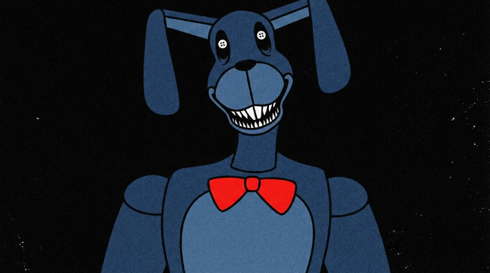

全体テーマ
記憶と忘却、罪と隠蔽、そして「美しくする」という歪んだ論理。
The Walten Files
元ノートを網羅しつつ、章ごとに追いやすく整理した閲覧サイトです。 検索・目次・タイムラインで必要な情報へすぐ移動できます。

記憶と忘却、罪と隠蔽、そして「美しくする」という歪んだ論理。
ソフィー・ウォルテンの記憶回復が、全ファイルを貫く軸として機能。
Bon's Burgers / K-9保管施設 / BunnyFarm（ゲーム媒体）。
「きれいにする」「Safety in pills」「I'm still here」。